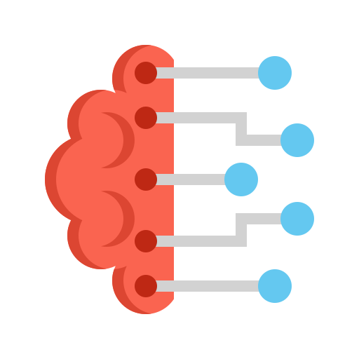
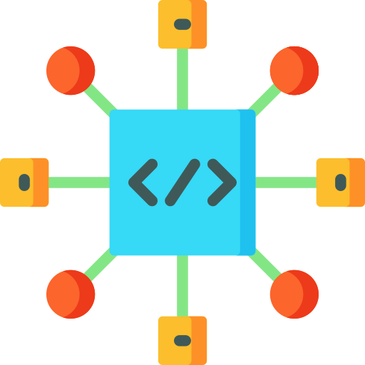

O que é Inteligência Artificial?
Definição
A Inteligência Artificial (IA) é a ciência de criar sistemas que simulam a inteligência humana. Ela usa algoritmos e dados para aprender, raciocinar e tomar decisões, executando tarefas que antes exigiam uma pessoa, como reconhecer imagens ou entender a linguagem.
Objetivos da IA

Automatização
Otimize sua rotina com IA
Ganhe tempo e produtividade delegando tarefas repetitivas para a inteligência artificial. Assim, você foca no que realmente importa.
Tomar decisões mais assertivas
 O poder dos dados com IA
O poder dos dados com IA
A IA processa enormes volumes de dados em segundos, identificando tendências e padrões invisíveis para os humanos. Isso permite decisões estratégicas com base em informações precisas.
Otimização e Solução de Problemas
Resolvendo desafios complexos
Sistemas de IA podem analisar enormes volumes de dados para identificar padrões e propor soluções para problemas complexos, como na medicina e finanças.
Inovação e Criatividade
 Criando o futuro, hoje
Criando o futuro, hoje
A IA é a força por trás de inovações revolucionárias. Ela nos permite ir além, explorando novas formas de interação entre humanos e máquinas e tornando a ficção científica uma realidade.
Termos e Conceitos Chave
Machine Learning

Um subcampo da IA que ensina computadores a aprender a partir de dados, sem serem explicitamente programados.
Redes Neurais
Modelos inspirados no cérebro humano, usados para reconhecer padrões complexos em dados.
Deep Learning
Uma técnica de Machine Learning que utiliza redes neurais com várias camadas para extrair representações de dados de forma hierárquica.
Processamento de Linguagem Natural (NLP)

A capacidade de um computador entender, interpretar e gerar linguagem humana, seja falada ou escrita.
Visão Computacional
Permite que computadores "vejam" e compreendam o conteúdo de imagens e vídeos, identificando objetos e pessoas.
Algoritmo
Um conjunto de instruções passo a passo para resolver um problema ou executar uma tarefa.